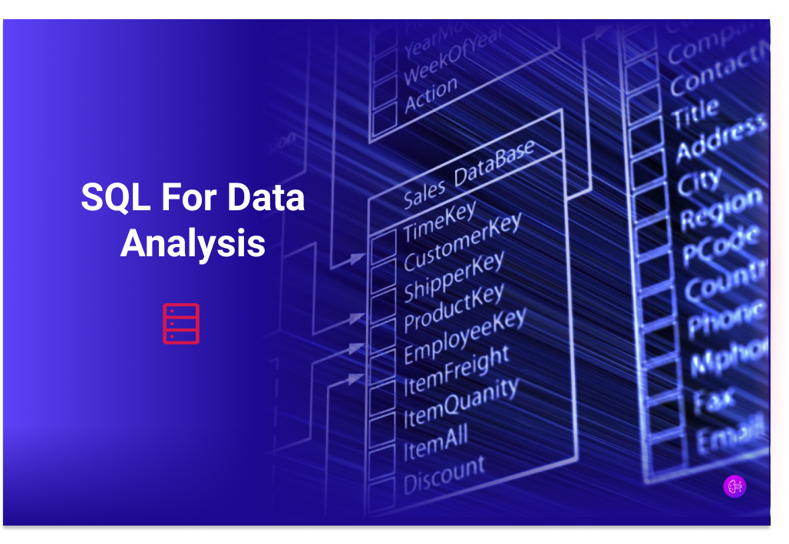
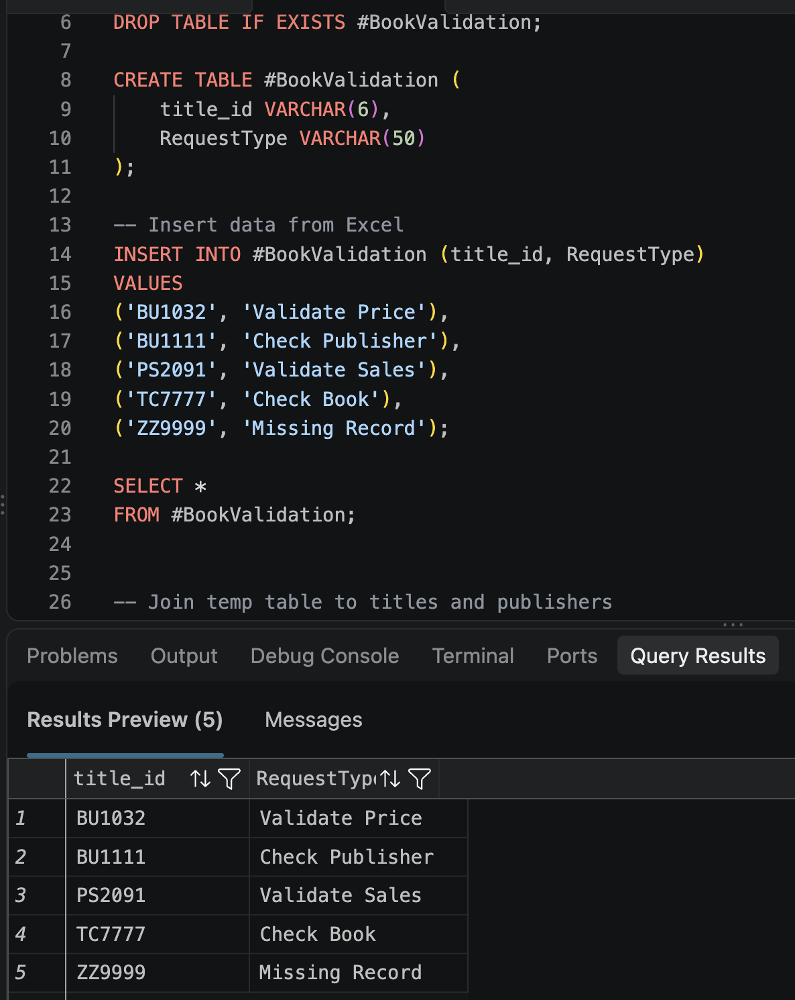
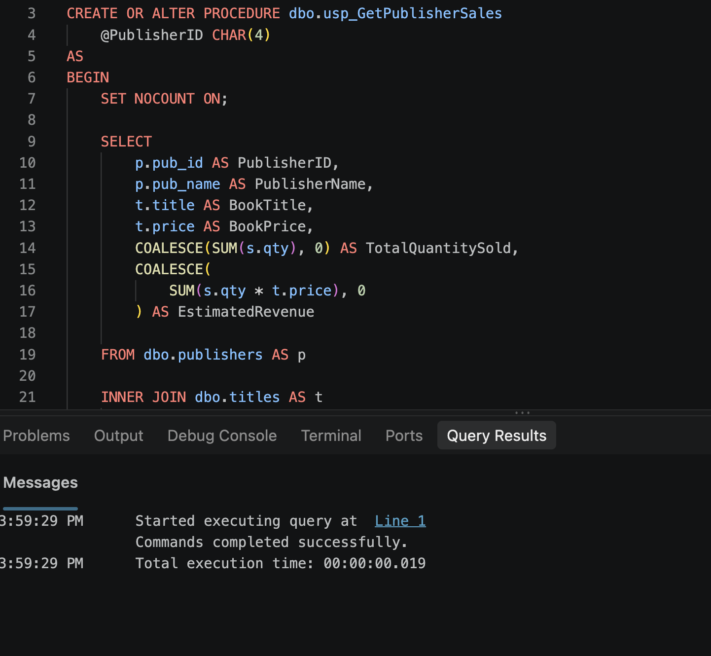
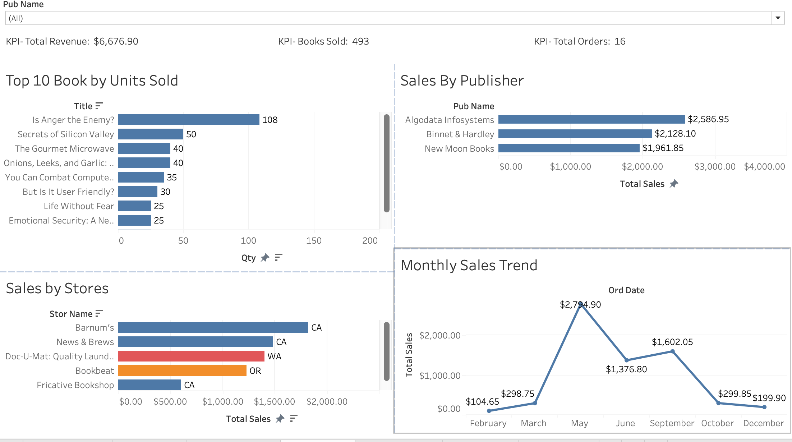
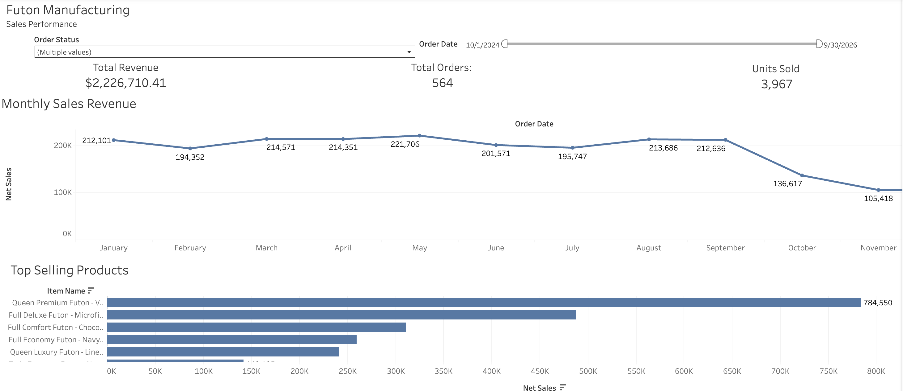

Designed and implemented a relational SQL database to manage students,
courses, employees, and academic contacts. Includes table design,
primary/foreign key constraints, indexes, stored procedures, triggers,
and views to support data integrity and reporting.

SQL validation query used to extract and verify enrollment rate codes by
filtering active coverage segments, excluding voided records, and applying
effective and termination date criteria. This query supported production
data validation and ensured rate code accuracy.
SQL query run across multiple departmental databases to extract active member records where the effective date preceded the member’s date of birth. This logic was used to detect data anomalies and support large-scale data validation efforts.
SQL practice examples demonstrating Common Table
Expressions (CTEs), aggregate functions, and
correlated subqueries.

Created a temporary table to store sample Excel
data and used LEFT JOINs to compare records
against existing SQL Server database tables.
Used CASE statements to identify matching and
missing records and aggregate functions to
summarize validation results.

Created a SQL Server stored procedure to retrieve
and analyze book sales by publisher using input
parameters. Used JOINs, aggregate functions,
GROUP BY, and ORDER BY to calculate total
quantities sold and estimated sales revenue.
The stored procedure allows the query to be
executed repeatedly for different publishers.

Created an interactive tableau dashboard using book sales data I pulled from SQL Server. I used SQL joins to combine the data and built charts to analyze sales by publisher, store, and month. I also added KPIs to track total revenue, books sold, and orders, along with interactive filters that allow users to select different publishers and see how the sales data changes across the dashboard.

Built an interactive Tableau dashboard using sales data
from a sample furniture manufacturing database. I used
SQL Server to join sales orders, order details, and product
information into a single view. I also wrote SQL queries
to validate revenue, order counts, and units sold.
The dashboard tracks monthly revenue, top-selling products,
and overall sales performance, with filters for order status
and date range.